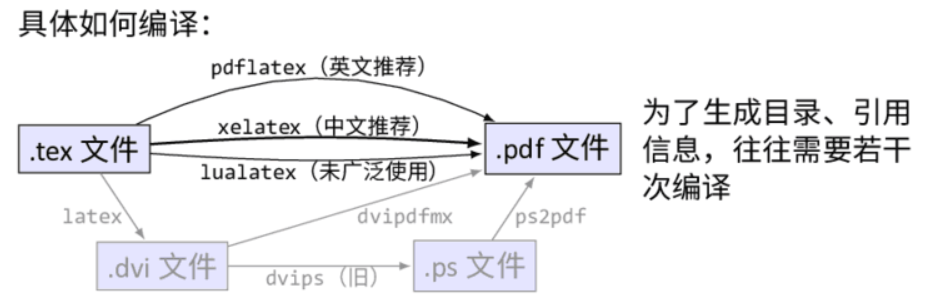
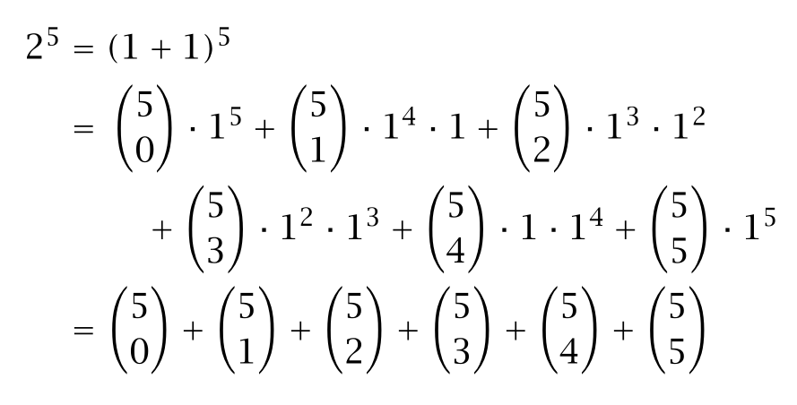
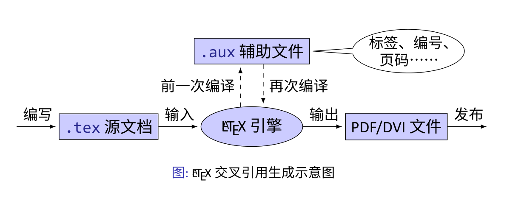
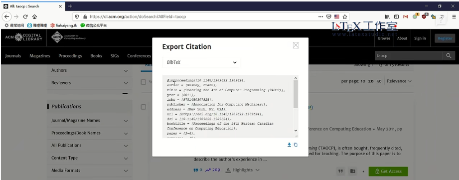

讲义
{% pdf TeX-Talk.pdf%}
参考网站
- 刘海洋 · LaTeX 不快速的入门 - 跟着大神学习最纯正的 LaTeX 知识_哔哩哔哩_bilibili
- LaTeX 工作室 问答社区 (latexstudio.net)
- GitHub - Direct-A/hbuthesis: a LaTeX template for master degree in hebei university
- 使用 VSCode 编写 LaTeX - 知乎 (zhihu.com)
- Overleaf, 在线 LaTeX 编辑器
课程
第一部分 组织文档结构
文档由什么组成?
- 标题
- 前言/摘要
- 目录
- 正文
- 篇、章、小节、小段
- 文字、公式
- 列表：编号的、不编号的、带小标题的
- 定理、引理、命题、证明、结论
- 诗歌、引文、程序代码、算法伪码
- 制表
- 画图
- 篇、章、小节、小段
- 文献
- 索引、词汇表
纲举目张
支持结构化的文档编写方式，步骤：
- 拟定主题
- 列出提纲
- 填写内容
调整格式不要在意格式
其他软件
- markdown
- LYX：结构化的文档写作系统
LATEX 文档基本结构
%%% 简单文档
% 导言：格式设置
\documentclass{ctexart}
\usepackage[b5paper]{geometry}
% 正文：填写内容
\begin{document}
使用 \LaTeX
\end{document}以document环境为界，
-
document环境前是导言部分(preamble);
-
环境内部是正文部分；
-
环境之后的部分被忽略
在导言区进行格式设置，正文部分套用格式。
文档部件
- 标题：\title、\author、\date——\maketitle
- 摘要/前言：abstract环境/\chapter*
- 目录：\tableofcontents
- 章节：\chapter、\section...
- 附录：\appendix+\chapter或\section...
- 文献：\bibliography
- 索引：\printindex
文档划分
- 大型文档：
- \frontmatter
- \mainmatter
- \backmatter
- 一般文档：
- \appendix
| 层次 | 名称 | 命令 | 说明 |
|---|---|---|---|
| -1 | part | \part | 可选的最高层 |
| 0 | chapter | \chapter | report，book类最高层：书 |
| 1 | section | \section | article类最高层：学生论文 |
| 2 | subsection | \subsection | report, book类 |
| 3 | subsubsection | \subsubsection | 默认不编号、不编目录 |
| 4 | paragraph | \paragraph | 默认不编号、不编目录 |
| 5 | subparagraph | \subparagraph | 默认不编号、不编目录 |
磁盘文件组织
小文档将所有内容写在同一个目录中。对比较大的文档，可以将文档分成多个文件，并划分文件目录结构：
- 主文档，给出文档框架结构
- 按内容章节划分不同的文件
- 使用单独的类文件和格式文件设置格式
- 用小文件隔离复杂的图表
相关命令：
- \documentclass：读入文档类文件(.cls)
- \usepackage：读入一个格式文件——宏包(.sty)
- \include：分页，并读入章节文件(.tex)
- \input：读入任意的文件
文档框架示例

第二部分 填写文档内容
LATEX 基础
迟到的 Hello world.
找个东西输入文本：
\documentclass{article}
\begin{document}
Hello world.
\end{document}中文几乎没有改变，将\documentclass里内容改成ctexart：Chinese TeX article，并设置[UTF8]：
\documentclass[UTF8]{ctexart}
\begin{document}
今天你吃了吗?
\end{document}{kind=link}

语法结构
相比较原始的语言，的语法结构被限制为相对固定的形式。
- 命令：参数总在后面花括号表示，用中括号表示可选参数
- 环境
- 注释：以百分号%开头
LATEX 宏：命令与环境
- 命令：以反斜线开头，可以带零到多个参数：\frac{1}{2}:
- 环境：
\begin{flushright} % 环境内的文字保持右对齐
环境的内容
\end{flushright}正文文本
换行符会被视作一个空格
如果需要两个自然段，则要敲两个回车
\documentclass{article}
\begin{document}
aa
bb
\end{document}正文符号
\S \P \textbullet \textregistered \texttrademark
(hexo 里显示不出来..)
公式
数学公式
数学模式下字体、符号、间距与正文都不同，一切数学公式（包括单个符号、）都要在数学模式下输入。
- 行内（inline）公式：使用一对$$来表示，如$a+b=c$
- 显示（display）公式：
- 简单的不编号公式用命令\[和\]表示。（不要使用双美元符号$$ $$，会有细微的差异）
- 基本的标号的公式用equation环境
- 更复杂的结构，使用amsmath宏包提供专门的数学环境。（不要使用eqnarray环境）
数学结构
- 上标与下标：用^和_表示
- 上下划线与花括号：\overline，\underline，\overbrace，\underbrace
- 分式：\frac{分子}{分母}：
- 根式：\sqrt[次数]{根号下}：
- 矩阵：使用amsmath宏包提供的专门的矩阵环境matrix，pmatrix，bmatrix等。特别复杂的矩阵（如带线条）使用array环境作为表格画出。
数学符号
- 数学字母, 数学字体\mathbb(), \mathcal()等
- 普通符号：如\infty(), \angle()等
- 二元运算符：
- 二元关系符：
- 括号：, 使用\left, \right 放大
- 标点：逗号、分号（\colon）
不同的类型会决定不同的断行模式和不同的距离
amsmath 与 mathtools
-
amsmath是基本的数学工具包，在包含数学公式的文档中几乎无处不在。
-
mathtools则对 amsmath做了一些补充和增强。
\documentclass{article}
\usepackage{amsmath}
\usepackage{mathtools}
\begin{document}
\begin{align*}
2^5 &= (1+1)^5 \\
&= \begin{multlined}[t]
\binom50\cdot 1^5 + \binom51\cdot 1^4 \cdot 1
+ \binom52\cdot 1^3 \cdot 1^2 \\
+ \binom53\cdot 1^2 \cdot 1^3
+ \binom54\cdot 1 \cdot 1^4 + \binom55\cdot 1^5
\end{multlined} \\
&= \binom50 + \binom51 + \binom52 + \binom53
+ \binom54 + \binom55
\end{align*}
\end{document}{kind=link}

科技功能
- siunitx（国际单位制扩展）: 数字单位的一揽子解决方案
\usepackage{siunitx}\num{-1.235e96} \\
\SI{299792458}{m/s} \\
\SI{2x7x3.5}{m}
（仿）
\begin{tabular}{|S|}\hline
-234532\\ 13.55 \\ .9e37km \\
\hline
\end{tabular}- chemformula：编写化学式
- chemformula宏包（过去用mhchem）是在中定义新语法规则的典范。
\usepackage{chemformula}它让化学反应式的书写比数学式还要容易，绝大部分功能只需要\ch 一条命令：
\ch{2 H2 + O2 -> 2H2O}
\ch{2H2O -> 2 H2 ^ + O2 ^}如何用 markdown 写化学方程式？- 知乎 (zhihu.com)
列表与文本块
列表环境
- enumerate 编号
\begin{enumerate}
\item aaa
\item bbb
\end{enumerate}
- a 使用itemize 不编号
- description 有标题
定理类环境
- 定义定理类环境
- \newtherorem定义定理类环境，如
\newtheorem{thm}{定理}[section]- 使用定理类环境：
\begin{thm}
一个定理
\end{thm}诗歌和引文
- verse
- quote
- quotation
抄录代码
- \verb命令，如
代码\verb|#include<stdio.h>|- verbatim
\begin{verbatim}
#include <stdio.h>
int main(void) {
printf("hello world.");
return 0;
}
\end{verbatim}高级代码：语法高亮
- 使用listings 宏包
\begin{lstlisting}[language=C,
basicstyle=\ttfamily,
stringstyle=\color{blue}]
#include <stdio.h>
int main(void) {
printf("hello world.");
return 0;
}
\end{lstlisting}- minted 宏包（调用 Pygment）
算法结构
- clrscode 宏包（算法导论）

- algorithm2e 宏包
- algorithmicx 宏包的 algpseudocode 格式
图表与浮动环境
画表格
使用 tabular 环境。
\begin{tabular}{|rr|}
\hline
输入& 输出\\ \hline
$-2$ & 4 \\
0 & 0 \\
2 & 4 \\ \hline
\end{tabular}| 输入 | 输出 |
|---|---|
| -2 | 4 |
| 0 | 0 |
| 2 | 4 |
可以使用一些工具生成表格代码，例如：
Create LaTeX tables online – TablesGenerator.com
功能各异的表格宏包
- 单元格处理：multirow（多行变一行）、makecell（一行拆多行）
- 长表格：longtable（长表格，超出页自动换下一页）、xtab
- 定宽表格：xtabular
- 表线控制：booktabs（三线表）、diagbox（斜线宏包）、arydshln
- 表列格式：array
- 综合应用：tabu
插图
使用graphicx宏包提供的\includegraphics命令
\includegraphics[width=2cm]{pkulogo.pdf}代码画图
优先使用外部工具画图，特别是可视化工具，例如一般的矢量图用Inkscape、Illustrator 甚至 PowerPoint（保存为 pdf 格式），数学图形用MATLAB、matplotlib 之类。 如果有合适的宏包，某些特定类型的图形也可以用代码作图。现代 绘图宏包很多基于 TikZ。
浮动体
- figure 环境
- table 环境
- 其他环境可以使用 float 宏包得到
浮动体的标题用 \caption 命令得到，自动编号。
自动化工具
目录

交叉引用工作原理
{kind=link}

hyperref: PDF 的链接与书签
- hyperref 产生链接和书签的原理与普通的交叉引用相同。hyperref 会在 PDF 中写入相应的“锚点”代码，在其他地方引用。交叉引用的代码并入 .aux 文件，目录的代码并入 .toc 文件，PDF 书签则产生单独的.out 文件。
BIBTEX 参考文献

{kind=link}

设置文献格式
-
选用合适的.bst 格式，比如plainnat , gbt7714-plain
-
natbib 与作者‐年格式
-
利用 custom‐bib 产生定制的格式文件
-
biblatex + Biber：文献处理的新方式
第三部分：设计文档格式
基本规则
格式与内容分离不要在意细节- 使用内容相关的命令与环境
It is \emph{important}。% 推荐
It is \textit{important}. % 不推荐两者在默认情况下效果一样，但是在不同模板效果不一定一样。
\caption{流程图} % 推荐
\textbf{图 1: } 流程图 % 不推荐，不会自动编号 使用宏包
- 作用：宏包将可重用的代码提取出来，相当于其他程序语言中的“库”。使用宏包可以用简单的接口实现非常复杂的功能，有些对于个人来说是“不可能的任务”。
- 问题：第三方宏包可能破坏 TEX 设计的“向前兼容性”；不同宏包之间如果出现兼容性问题更难解决。——使用宏包会将兼容性问题从 TEX 语言扩大到所有宏包代码。
现代文档离不开第三方宏包，但应该合理使用：
- 尽量不造轮子
- 尽量排除不使用的宏包
格式控制功能
字体符号
- 字体
- \rmfamily, \textrm{...}
- \sffamily, \textsf{...}
- \ttfamily, \texttt{...}
- 字号：\Huge, \LARGE, \Large, \large, \normalsize, \small, \footnotesize, \scriptsize, \tiny
- 中文字号：\zihao{5}（五号字）、\zihao{‐3}（小三号字）
对齐
- 居中对齐：\centering
- 左对齐：\raggedleft
- 右对齐：\raggedright
空白间距
- 水平方向：\hspace{2cm}
- 垂直方向：\vspace{3mm}
版面布局
- geometry
- fancyhdr
分页断行
- \linebreak、\ \pagebreak、\newpage、\clearpage、\cleardoublepage
盒子
- \mbox{内容} \parbox{4em}{内容}、minipage
格式应用于文档
使用在导言区单独设置格式
- 直接设置相关参数： \parindent、\parskip、 \linespread、\pagestyle
- 修改部分命令定义。如修改：\thesection、\labelenumi、 \descriptionlabel、\figurename
- 使用工具宏包完成设置。
- 如使用 ctex 宏包设置中文格式，使用 tocloft 宏包设置目录格式。
利用自定义命令和环境
\documentclass{ctexart}
\newcommand\prg[1]{\textsf{#1}}
\begin{document}
程序 \prg{sort} 很有用
\end{document}章节标题
浮动标题
- caption 宏包
列表环境
- enumitem 宏包